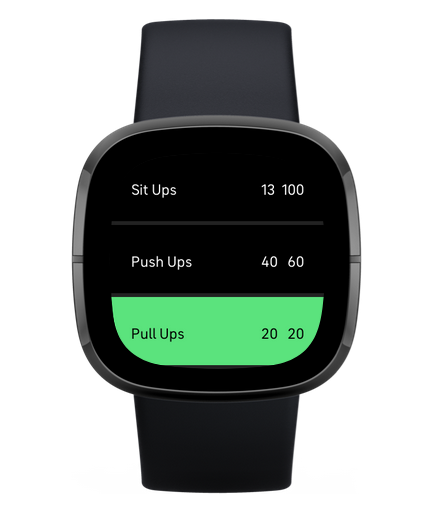
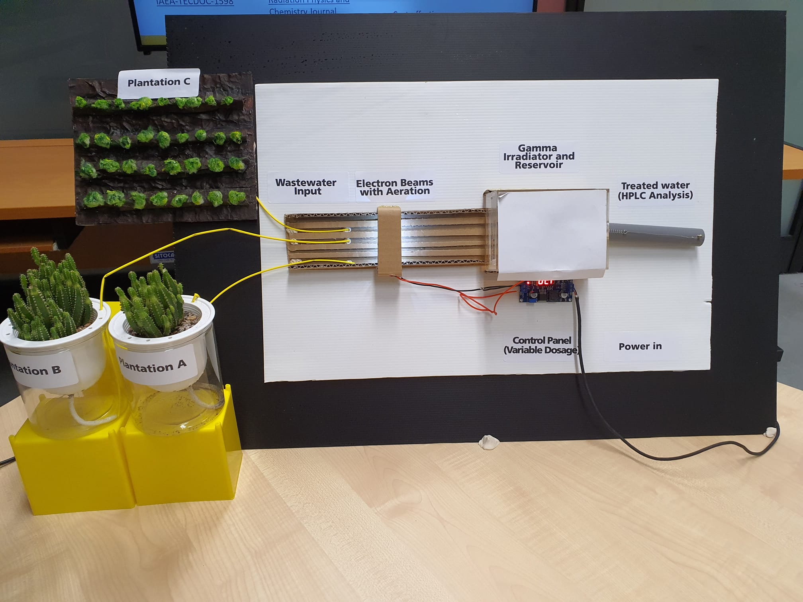
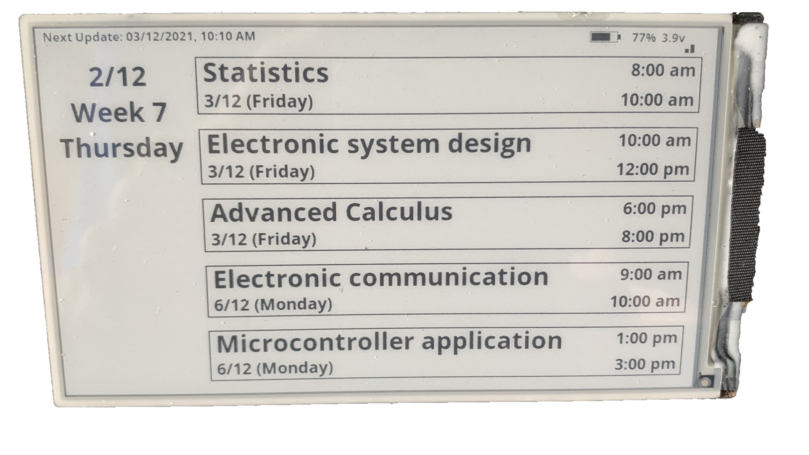
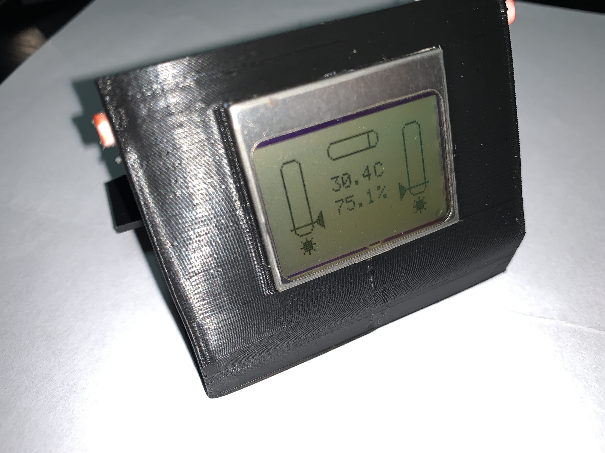

IOT weather station - v2
.png)
.png)
- Enhanced previous weather station project with an E-Ink display for better battery efficiency.
- Developed a purpose-built PCB for dual power sources: solar power and a supercapacitor, alongside traditional battery power.
- Improved battery life from 2 months to over 2 years.
- Integrated UV sensos
EInkBoard - dashboard
.jpg)
.jpg)
- Multipurpose E-Ink display capable of showing calendar events, tasks, weather, and more.
- Self-programmed, including API requests to server and power optimization.
- Allows for several months of runtime without charging.
- Proves the feasibility of low-powered calendar displays.
- Useful as a home planner or office scheduler.
HydroTrack - water intake tracker

- HydroTrack is a device designed to help users track their water intake and stay hydrated.
- Features a multi-colored LED ring and mobile phone connectivity for data display and review.
- An accompanying app provides additional features and functionality.
- Helps users ensure adequate daily fluid intake, encourages increased water consumption, and aids in understanding personal water consumption patterns.
Circuit design, soldering and microcontroller programming

- The circuit board was designed using EAGLE.
- Required calculation of resistor values and reading of datasheets.
- Involved soldering components onto the board.
- The project was coded using Atmel Studio.
Personal online portfolio

- This website showcases my projects over the years.
- It was created using HTML and Bootstrap.
- The website is responsive and can be viewed on any device, including laptops and mobiles.
Fitness Tracker (FitBit Application)

- Developed a fitness tracker application using FitBit Studio.
- Created due to a lack of similar applications on the app store for tracking exercises.
- Enables tracking of both repetition-based and time-based exercises.
- The app is listed on the Fitbit store and has been purchased more than 10 times.
Engineering Innovation Challenge (First runner up)

- Represented school in the Engineering Innovation Challenge on the topic of "Ionising Radiation".
- Conducted research and experiments to understand ionising radiation.
- Created a prototype and presented it to a panel of judges.
- Achieved the position of first runner up.
- Official website: EIC 2021
E-Ink school calendar

- The E-Ink school calendar display is a personal project for convenience in checking my timetable.
- It required the creation of an intricate program to securely retrieve data from my calendar.
- The display is battery-powered and designed for energy efficiency, lasting multiple months on a single charge.
LibraLink

- This project was part of a school assignment to create a smart connected system for a library.
- Features include noise detection and a vibration sensor.
- All sensor data is accessible through a website for on-demand viewing.
- The demo website linked to the "view" button uses simulated data.
Hand Hygienics

- This project won second place in the M5-Stack industry competition.
- Hand Hygenics was chosen as the top project by the school.
IOT weather station

- This device displays air temperature, humidity, and light intensity.
- A schematic was created from scratch and hand-soldered onto a PCB perf board.
- A 3D designed enclosure was created and printed to house all components.
- Components include: battery, PCB board, microcontroller, display, and multiple sensors.
Focus assist
- This prototype was developed to test my skills.
- Its purpose was to lock away distractions such as phones and earpieces.
- Provided an opportunity to practice programming on the newly released Raspberry Pi Pico microcontroller.
Food stall website

- The website was created from scratch for an economical rice stall.
- Features include a detailed menu with prices and customer reviews.
- An online ordering system was developed for customer convenience.
- The location of the stall is also provided on the website.
Smart carpark

- The Smart Carpark project showcased my creativity, electronics, reporting, and programming skills.
- It involved careful planning and execution of hundreds of components.
- The project was recognized as the top project by the school.
Micro:Bit Project

- Developed a microbit-based program in a team that links with a concentration tracker and a mobile phone app.
- The microbit displays prompts on the built-in LED matrix and sounds out alerts when the user is detected to be not concentrating.
- This project was showcased to the CEO of the micro:bit foundation, Gareth Stockdale.
RoboCup Competition 2019

- Participated in the Robocup competition with my team.
- The competition involved writing programs and competing for the best score.
- Competed against teams from other local schools and from other countries.
Tech Saturday event

- As part of our Applied Learning Program (ALP), my team and I developed a shooting game.
- The game underwent several revisions before the final product was displayed at the Tech Saturday event by IMDA.
- The booth attracted many visitors, including students, teachers, and notable guests such as Dr Yaacob Ibrahim and local celebrity Mr Romeo Tan.
RoboCup Competition 2018
- Participated in the Robocup competition with my team.
- The competition involved writing programs and competing for the best score.
- Competed against teams from other local schools and from other countries.